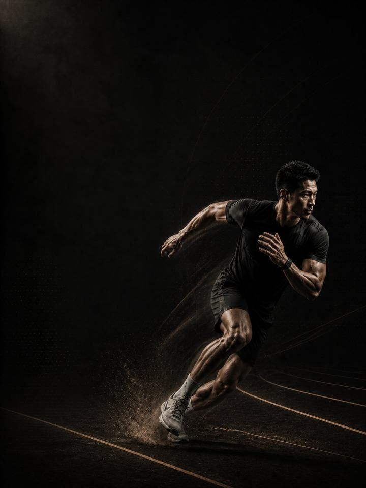

التطوير الرياضي
ابنِ قوة الرياضي وقدرته الانفجارية ومتانته، دون أن تحتاج إلى رياضة تتدرّب من أجلها.
- مناسب لـمن يريد أن يكون رياضيًا دون أن يمارس رياضة معيّنة
- أيام التدريب3 أيام غير متتالية في الأسبوع، أو نسخة مختصرة من يومين
- مدة الجلسة48–60 دقيقة
- المعداتنادٍ متكامل، مع كرة طبية وزلّاجة وصندوق إن توفّرت
- الصيغةملف PDF للهاتف، وكل تمرين مرتبط بفيديو توضيحي
لمن هذا البرنامج
معظم برامج النادي تمنحك مظهر المتدرّب. هذا البرنامج يمنحك حركة المتدرّب. صُمّم لمن يريد أن يكون رياضيًا حقًا، قويًا وانفجاريًا وسريعًا وصعب الإصابة، دون رياضة أو موسم أو مباراة في نهاية الأسبوع يخطّط حولها. ويناسب أيضًا كل من يعود إلى التمرين ويريد أكثر من دورة على الأجهزة.
ترفع الأثقال وتقفز وترمي وتعدو وتحمل، بالترتيب الذي تُبنى به هذه الصفات: القوة أولًا، ثم القدرة الانفجارية، ثم السرعة. والأنسجة الأربعة التي تقف وراء معظم إصابات البالغين، العضلات الخلفية للفخذ وأعلى الفخذ الداخلي والسمانة والكتف، تُقوّى كل أسبوع.
لا يناسبك إذا كنت تنافس في رياضة. طبّق برنامج AXIS الخاص بعائلة رياضتك بدلًا منه، فتلك البرامج مبنية حول سنة تنافسية.
أسبوعك
ثلاثة أيام تمرين غير متتالية. وهناك نسخة من يومين للفترات المزدحمة.
| الأسبوع | الأحد | الاثنين | الثلاثاء | الأربعاء | الخميس | الجمعة | السبت |
|---|---|---|---|---|---|---|---|
| المعتاد (3 أيام) | اليوم 1 الجزء السفلي والقدرة الانفجارية | راحة | اليوم 2 الجزء العلوي والجذع | راحة | اليوم 3 السرعة والرشاقة | راحة | راحة |
| المختصر (يومان) | اليوم 1 الجزء السفلي والقدرة الانفجارية | راحة | راحة | اليوم 2 الجزء العلوي والجذع | راحة | راحة | راحة |
الجداول مكتوبة لنسخة الأيام الثلاثة. ومع يومين، تحافظ على القوة ومعظم القدرة الانفجارية، وتخسر بعض تمارين السرعة.
كل جلسة تسير بالطريقة نفسها:
- الإحماء، 8–10 دقائق. تفعيل الأرداف والوركين والكتفين قبل أي حركة سريعة.
- القدرة الانفجارية والسرعة، 12–15 دقيقة. القفزات والرميات والعَدْو، مع تعافٍ كامل بين المجموعات. تتوقّف المجموعة لحظة انخفاض الجودة.
- القوة، 20–25 دقيقة. الرفعات المركّبة الثقيلة، مع دقيقتين إلى ثلاث دقائق بين المجموعات، لأن القوة تُبنى هنا.
- تمارين الأنسجة، 8–10 دقائق. النوردي وكوبنهاغن والسمانة والحمل. في النهاية، ولا تُحذف أبدًا.
الترتيب مهم. القدرة الانفجارية والسرعة تأتيان قبل التعب، لأن القدرة التي تُدرَّب وأنت متعب تصبح تمرين لياقة مع خطر إضافي. والرفعات الثقيلة تأتي قبل التمارين المساعدة. وتمارين الأنسجة في النهاية لأنها يجب ألا تُتخطّى أبدًا، ووضعها في النهاية يعني أنها تنجو من الجلسة المستعجلة بدلًا من أن تُقتطع من منتصفها.
كيف تتقدّم الأسابيع الـ12
ثلاث مراحل، مدة كل منها أربعة أسابيع. تستمر القوة طوال الأسابيع الاثني عشر حتى يواصل الحمل الارتفاع. أما القفزات والرميات والعَدْو فتتغيّر كل أربعة أسابيع: بتحكّم وعلى الساقين معًا أولًا، ثم على ساق واحدة وجانبيًا، ثم ارتدادية وسريعة.
| الأسابيع 1–4 | الأسابيع 5–8 | الأسابيع 9–12 | |
|---|---|---|---|
| المرحلة | التحميل اللامركزي والهبوط | معدّل إنتاج القوة | المرونة الارتدادية والسرعة |
| الهدف | بناء القوة اللامركزية والتحكّم في الهبوط | بناء معدّل إنتاج القوة برفعات سريعة وقوية | بناء القوة الارتدادية بزمن ملامسة قصير للأرض |
| كيف تبدو | قفزات على الساقين معًا تركّز على الهبوط. تعلّم امتصاص القوة قبل أن تنفجر. | قفزات على ساق واحدة وجانبية. تصبح الزلّاجة أخف وأسرع. | ملامسات أقصر، وعَدْو حر، وقوة تحافظ على ما بنته |
| المجموعات الفعلية أسبوعيًا | 72 | 79 | 84 |
| مرات الهبوط أسبوعيًا | 64 | 115 | 139 |
| الرميات أسبوعيًا | 20 | 50 | 0 |
| متوسط الجهد | جهد 7.0/10 | جهد 7.5/10 | جهد 7.6/10 |
المرحلة في لمحة
المجموعات التدريبية أسبوعيًا حسب ما تدرّبه. الخط المتقطع هو مستوى الجهد.
هذا المقياس هو الجهد (RPE)، أي تقييم من 1 إلى 10 لمدى صعوبة المجموعة: «جهد 7/10» يعني أن توقف المجموعة ويتبقى في الخزان نحو ثلاثة تكرارات جيدة.
أسابيع التخفيف: الأسبوعان 6 و12 أخف. تقسم المجموعات على اثنين، وتقلّل حجم تمارين القدرة الانفجارية، وتحتفظ بالأوزان، وتعيد الاختبار وأنت مرتاح.
القواعد التي تجعله ينجح
- الأسبوع 1 أسبوع لإيجاد الأوزان. جلستك الأولى في كل رفعة بحث لا تمرين. ابدأ بوزن خفيف، وأدِّ التكرارات المكتوبة، ثم اسأل نفسك: هل كنت أستطيع أداء أربعة تكرارات إضافية؟ إن كان الجواب نعم، فأضف 5 كغ في الجزء السفلي أو 2.5 كغ في الجزء العلوي، وأعِد المجموعة مرة واحدة. هذا الرقم هو وزن العمل في الأسبوع 1، ومنه تُقرأ كل أهداف الجهد في البرنامج.
- القوة تبقى، والقدرة الانفجارية تتبدّل. رفعات البار تستمر طوال الأسابيع الاثني عشر حتى يرتفع الحمل. أما القفزات والرميات والعَدْو فتتغيّر كل أربعة أسابيع، لأن القدرة الانفجارية تتطوّر بتغيير النوع لا بإضافة المجموعات.
- الجودة هي سقف تمارين القدرة الانفجارية. القفزات والرميات والوثبات تتوقّف لحظة انخفاض الارتفاع أو المسافة، حتى في منتصف المجموعة. ملاحقة التكرارات هنا تبني التعب لا السرعة.
- أضف الوزن عندما تستحقه. عندما تصل إلى أعلى نطاق التكرارات في كل المجموعات بأداء نظيف، مرتين متتاليتين، أضف 2.5 كغ في الجزء العلوي أو 5 كغ في الجزء السفلي.
- الحياة أولًا. في الأسبوع الثقيل، من سفر أو نوم سيئ أو عطلة نهاية أسبوع مليئة بالنشاط، احذف مجموعة أو اختصر اليوم 3 إلى الإحماء وتمارين الأنسجة. تفويت جلسة لا يكلّف شيئًا، أما التمرين خلال أسبوع سيئ فقد يكلّف أسابيع.
لماذا الترتيب ثابت
القوة أساس القدرة الانفجارية، والقدرة الانفجارية أساس السرعة. والثلاث كلها تقوم على أنسجة تتحمّل الحمل. لا تستطيع أن تُظهر قدرة لا تملكها، لذلك يبدأ أثقل رفع في مقدّمة الكتلة ولا يغيب تمامًا أبدًا. والتدرّج الحقيقي في القدرة الانفجارية ينتقل من الساقين إلى ساق واحدة، ومن التحكّم إلى الارتداد، ومن الملامسات البطيئة إلى السريعة، وهذا ما تفعله المراحل الثلاث.
لماذا يُدرَّب التباطؤ
معظم الإصابات التي لا تحدث بالاحتكاك تقع أثناء التباطؤ أو الهبوط، لا أثناء التسارع. امتصاص القوة على ساق واحدة، وخارج التوازن، وبسرعة، هو ما يفرّق الرياضي المتين عن الرياضي الذي يُصاب كثيرًا. لهذا تتكرّر الوثبات والعبور فوق الصندوق والهبوط طوال البرنامج، ولهذا يظهر تمرينا النوردي وكوبنهاغن في اليوم 1 كل أسبوع، سواء كان شيء يؤلمك حاليًا أم لا.
المصطلحات
- الكتلة التدريبية: 12 أسبوعًا. هذا البرنامج. تطوّر الكتلة الواحدة مجموعة واحدة من الصفات إلى مستوى محدّد.
- المرحلة (الدورة المتوسطة): 4 أسابيع. تستهدف كل منها صفة واحدة. وأربعة أسابيع اختيار لا قاعدة، فالمدة تتبع الهدف.
- الأسبوع التدريبي (الدورة الصغرى): حيث يرتفع الجهد، وتُضاف المجموعات، ويقع أسبوع التخفيف.
- السنة التدريبية (الدورة الكبرى): أربع كتل بالترتيب (الأساس، والبناء، والمنافسة، والاستشفاء)، نحو 48 أسبوعًا.
كيف تقيس تقدّمك
يتضمّن ملف PDF اختبارات معيارية، منها اختبار القفز على ساق واحدة، وجدولًا لتسجيل النتائج. تسجّل نقطة البداية، ثم تعيد الاختبار وأنت مرتاح في أسبوعي التخفيف، 6 و12.
شكل التقدّم الجيد
- الأسابيع 1–4: ترتفع القوة، ويبدأ عمل الأنسجة يؤتي أثره.
- الأسابيع 5–8: تتحسّن القفزات والوثبات مع تحويل تمارين القدرة الانفجارية للقوة إلى سرعة.
- الأسابيع 9–12: يصبح العَدْو وتغيير الاتجاه أكثر حدّة، ويضيق الفرق بين اليسار واليمين في اختبار القفز.
أفضل نتيجة ليست أكبر قفزة، بل اثنا عشر أسبوعًا مكتملة دون أن يوقفك أي ألم مزعج.
احترم أسبوعك
ثلاث جلسات صعبة تُضاف فوق كل ما تفعله غير ذلك. نزهة مشي طويلة، ومباراة بادل مع الأصدقاء، وأسبوع من النوم السيئ، كلها تُحسب. والقفزات المفاجئة في مجموع الحمل الأسبوعي أكثر المؤشرات موثوقية للتنبّؤ بالإصابة، فاحسب أسبوعك بصدق. أضف 20–30 دقيقة من المشي الخفيف في معظم الأيام، فهو تعافٍ مجاني لا تمرين إضافي. واحمِ 7–9 ساعات من النوم، فهي أقوى وسيلة لديك لتحسين الأداء وأرخصها.
الأدلة العلمية
كل برنامج في المكتبة مبني على أبحاث منشورة، وقوة تلك الأبحاث مذكورة صراحةً لا ضمنًا. وحيث تكون الأدلة محدودة، تقول الصفحة ذلك.
| النتيجة | المصدر | ما لا تُظهره |
|---|---|---|
| تدريب القوة يخفض الإصابات الرياضية إلى أقل من ثلث معدلها في المجموعة الضابطة. أما الإطالة فلا تخفضها. | Lauersen, Bertelsen & Andersen, British Journal of Sports Medicine 2014. Meta-analysis of 25 randomised controlled trials, 26,610 participants, 3,464 injuries. PMID 24100287 | نسبة الخطر 0.32 لتدريب القوة و0.96 للإطالة. تفاوتت التجارب كثيرًا، ولم تكن الجرعة موحّدة. |
| البرامج التي تتضمّن تمرين نورديك للعضلات الخلفية للفخذ تخفض إصابات العضلات الخلفية للفخذ إلى النصف تقريبًا. | van Dyk, Behan & Whiteley, British Journal of Sports Medicine 2019. Meta-analysis, 15 studies, 8,459 athletes. PMID 30808663 | نسبة الخطر 0.49، و0.55 عند استبعاد الدراسات الثماني عالية خطر التحيّز. وهي تقيس البرامج التي تتضمّن التمرين، لا التمرين وحده. |
| تمرين واحد للعضلات الضامّة، يُؤدّى ثلاث مرات أسبوعيًا قبل الموسم ومرة أسبوعيًا خلاله، خفّض مشكلات أعلى الفخذ الداخلي المبلَّغ عنها بنسبة 41%. | Harøy et al., British Journal of Sports Medicine 2019. Cluster-randomised controlled trial, 35 teams, 652 male footballers. PMID 29891614 | نسبة الأرجحية 0.59. المشكلات مبلَّغ عنها ذاتيًا، وفي كرة القدم شبه الاحترافية للرجال فقط. ولم تُكرَّر الدراسة على النساء أو في رياضات أخرى. |
| أي وصفة تدريب معقولة أفضل من عدم التدريب. الأحمال الأثقل تحتل المرتبة الأعلى للقوة، والمجموعات المتعددة تحتل المرتبة الأعلى لحجم العضلات. | Currier, McLeod, Banfield et al., British Journal of Sports Medicine 2023. Bayesian network meta-analysis, 178 strength and 119 hypertrophy studies, 5,097 and 3,364 participants, about 46% women. PMID 37414459 | كانت الفروق بين الوصفات صغيرة، وكلها نجحت. |
ماذا بعد
بعد 12 أسبوعًا:
- ابنِ العضلات في ثلاثة أيام: الجسم الكامل
- ابنِ العضلات في أربعة أيام: علوي / سفلي
- تمارس رياضة: سلسلة الأداء الرياضي
- منطقة واحدة تحتاج إلى عمل: السلسلة التصحيحية
قبل الشراء: احصل على موافقة طبية أولًا إذا
- كان لديك ألم في الصدر، أو ضيق تنفس غير معتاد، أو خفقان، أو دوخة أثناء المجهود.
- كان لديك ضغط دم مرتفع غير منضبط، أو مرض قلبي معروف، أو خضعت لعملية جراحية مؤخرًا.
- كنتِ حاملًا أو بعد الولادة بفترة قصيرة. احصلي على موافقة وبرنامج مخصص أولًا.
- كان لديك ألم حاد في مفصل واحد لا يهدأ. ابدأ ببرنامج أكسس التصحيحي المناسب.
هذا البرنامج إرشاد عام للياقة البدنية، ولا يغني عن التقييم الطبي.